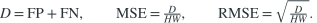
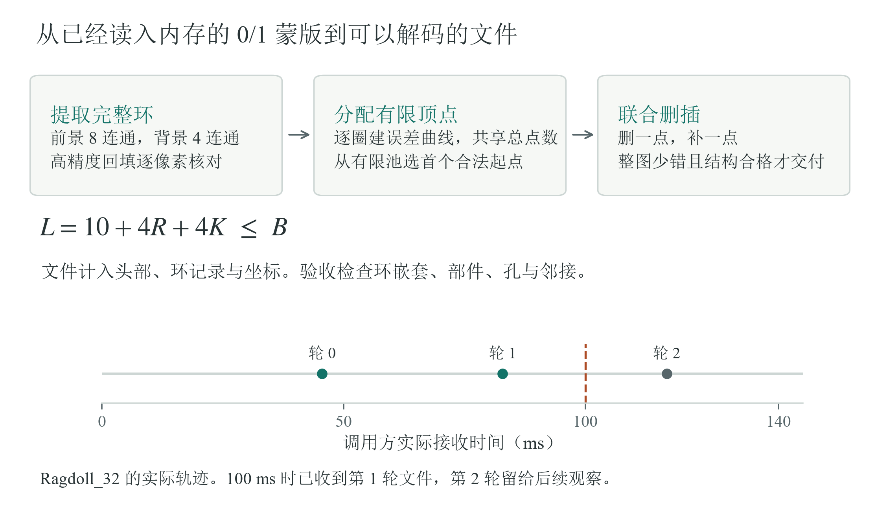
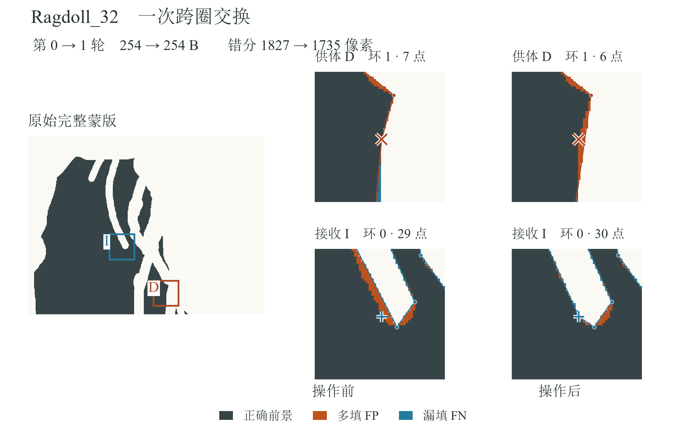
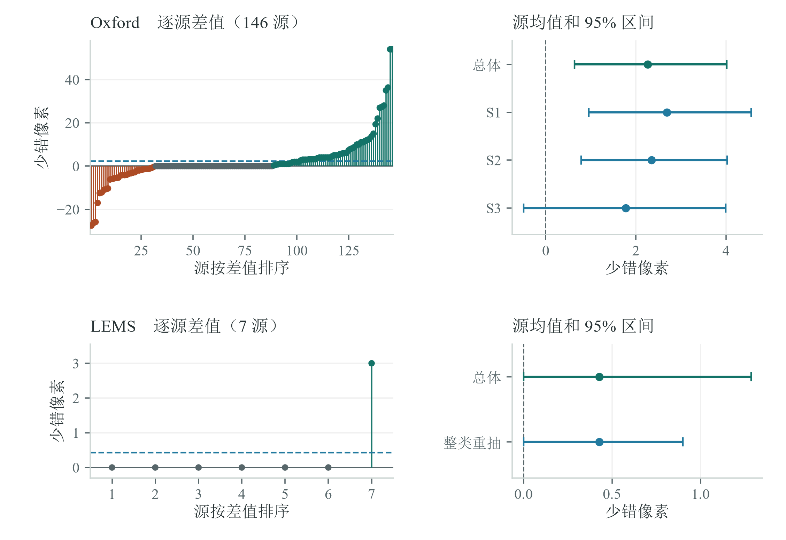
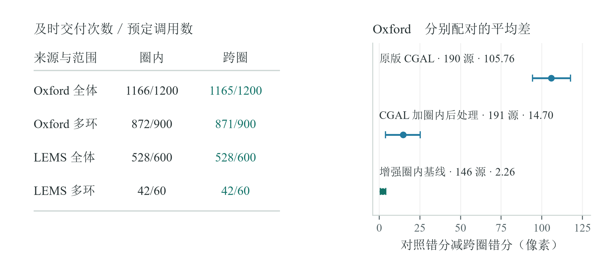
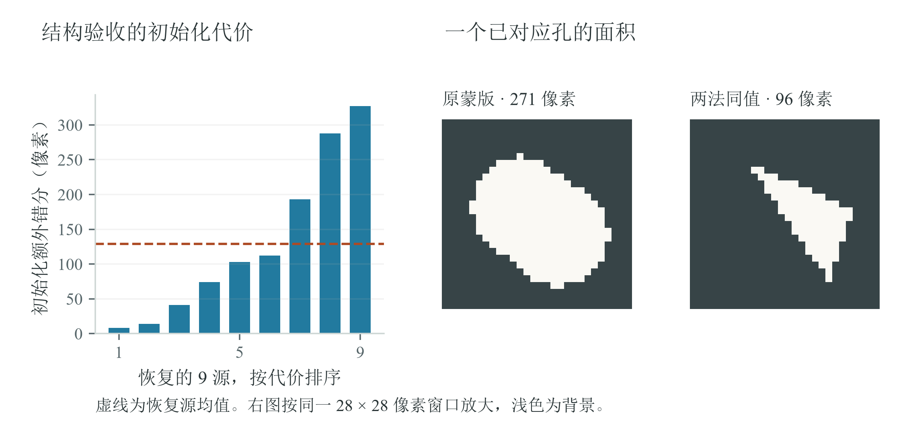
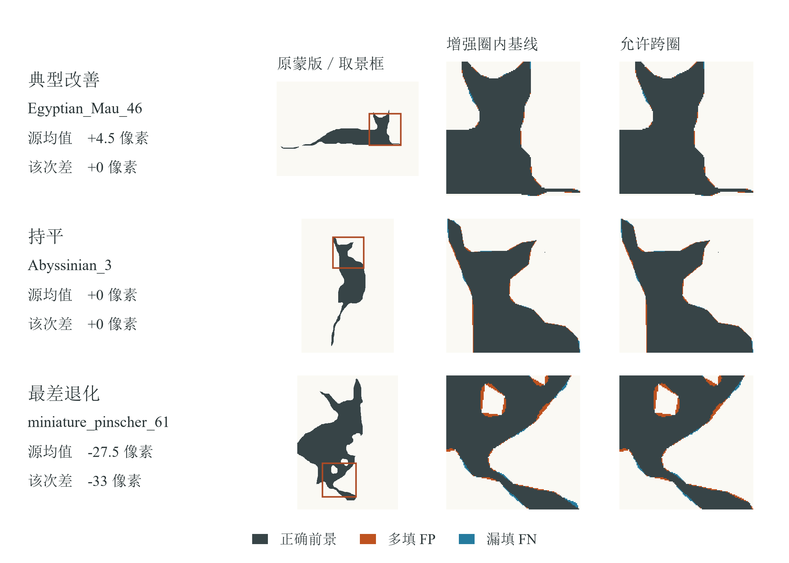

限时交付下保持部件与孔对应的二值蒙版多边形编码
1 已经有了蒙版，怎样把它存得更紧凑
设想要把一张现成的宠物标注导出为多边形文件。前景里可能有几块互相分离的区域，腿和躯干之间也可能围住一块背景。如果只沿最大的外圈描一遍，再把里面涂满，就会改变原标注。把所有圈都写进去时，它们又要共用有限的文件空间。给一个圈多留一个拐点，就要在别处省下一个点。
本项目输入一张完整的二值蒙版，输出一份可以单独解码的多边形文件。我们实测文件长度，检查解码后部件与孔的身份，并记录规定时点调用方手里已经有了哪一份结果。核心实验让两种方法从同一份合法文件出发。一种只能在同一个圈内调整顶点，另一种还可以把顶点从一个圈转给另一个圈。两者使用相同的解码器、码长和结构判据。
2 课程知识与直接先例
| 教学材料与定位 | 课上概念 | 本项目怎样使用 |
|---|---|---|
| Chapter 8 Image Compression，PDF 第 5–6 页，页脚分别为 5/39、6/53 | 编码器、解码器、压缩比 | 对真实文件计长，解码端只读取文件中的头、圈记录和坐标 |
| 同章 PDF 第 7 页，页脚 7/36 | 有损重建、误差图与均方根误差 | 直接比较输入与解码蒙版，把多填与漏填画回原来的像素位置 |
| Chapter 9 Morphological Image Processing，PDF 第 37–40 页，页脚 37/61 至 40/61。第 47 页页脚 47/61 | 连通分量、4/8 邻接、有限孔与填孔 | 前景按 8 连通、背景按 4 连通计数，逐一核对部件与孔。这里保留输入中的孔 |
| Digital Image Processing Using MATLAB，课程英文教材 PDF 第 252 页，印刷第 438–439 页 | 边界表示。第 439 页开始讨论最小周长多边形近似 | 用折线表示闭合边界，并把近似误差放回完整蒙版上衡量 |
上述位置已逐页核对本地文件。PDF 第 252 页是一幅双页扫描。对于取值只有 0 和 1 的图像，一个错分像素的平方误差恰好是 1。若图像高、宽为 H、W，D 为总错分，则课件中的重建误差可以直接写成

FP 表示把原背景填成前景，FN 表示漏掉原前景。以像素为单位的 D 便于检查一次顶点移动究竟修正了哪几格。跨来源时原始分辨率与形状大小不同，因此我们分别报告两个来源的错分差。
单条多边形按区域拟合已有直接先例。Panagiotakis 在固定顶点数时允许顶点在平面自由放置，用粒子群优化回填区域的 IoU。我们沿原始高精度环挑选顶点，保留多个圈的身份，并检查它们组合回填后的数字结构。前期单外圈试验另有作者程序的实测记录。Panagiotakis 2024
多条曲线之间分配有限线段也有先例。Kolesnikov 与 Fränti 研究多曲线共享总段数，用动态规划和受限搜索优化几何近似。CGAL 5.4 则在约束三角剖分中简化多条折线，避免引入新相交并保持嵌套。连续曲线层级正确后，离散填充仍可能封住一条窄缝。本项目把整图像素误差、解码后的部件与孔对应、真实字节交付放在同一实验里，并以原版 CGAL 及加相同区域后处理的 CGAL 作对照。Kolesnikov 与 Fränti 2005 · CGAL 5.4 方法说明
3 从二值像素到能够交付的编码
3.1 圈、部件、孔和字节怎样对应
前景部件是可以沿前景的边或角走通的一组像素。给图像四周补背景后，无法沿背景的公共边走到外部的那块背景是一个有限孔。环是几何上的闭合边界。一个部件可以有外边界和几条孔边界，孔中还可以有前景小岛。程序在补零的二值采样场上提取 0.25 等值线，顶点用四分之一像素格的整数坐标表示。高精度环先在完整画布上逐圈填充，按像素中心取样，再作奇偶合成。只有能逐像素还原原蒙版，才开始有损编码。
PM31 用 10 字节写入魔数、宽、高和环数。每环用 4 字节记录直接父圈编号与顶点个数，每个顶点的两个坐标合占 4 字节。设 R 为环数、K 为所有圈的顶点总数，实际长度为
只要写下一个点就要再用 4 字节。256 字节上限下，满足上述长度形式的最大整数是 254。比如 Ragdoll_32 有 7 环、54 点，实际文件为 254 字节。高精度顶点本来就少的源可以更短，空前景只需 10 字节。解码器在四倍网格上以 OpenCV LINE_8 逐圈填充，在原像素中心取样、逐环异或。嵌套两层时，里面的背景孔会重新显出。

图 1 字节、结构和时间三个条件作用在同一条编码轨迹上。下方标记来自 Ragdoll_32 的实收检查点。
3.2 先给每个圈分配多少点
逐圈使用 Ramer–Douglas–Peucker 思路（RDP）构造嵌套折线。每次把原弧段中偏离当前弦段最远的一点加回来，得到不同点数的近似。把每一级单独填回原尺寸，与同一个高精度圈的填充比较，可得到该圈用 k 个点时的错分曲线。动态规划（DP）在这些已建好的曲线上分配总点数，以逐圈错分之和最小为目标。这里 RDP 负责产生单圈形状，DP 负责挑各圈的点数。
各圈单独少错的组合有时会改变部件或孔。生产初始化从 DP 解和周长分配出发。两圈时能列出已有层级上的可行点数组合。多圈时再尝试在两个圈之间转移 1、2 或 4 点。候选按可加错分及固定次序排序，过多时保留基础分配、排名靠前和分散位置的候选，总数最多 40。逐一按完整蒙版验收，第一份合格文件立即交给调用方。有限池用尽时，结果为“当前搜索未找到”。只有预算低于此格式每圈至少三点的下界，才可判为“低于格式下界”。高精度不能回填或超出实现范围时另记“不支持”。成功、下界、未找到和不支持构成四种终态。在观察点还没收到文件且失败尚未返回时，另记“尚未收到”。
3.3 固定总点数的一次删插
增强圈内基线（within_full）在同一个圈删一点，并在与删点不相邻的边上插一点，从而移动顶点的用途。允许跨圈的方法（cross）也可以从一圈删点，在另一圈插点。接收边只尝试原弧段上距弦段最远的位置和中间位置，重复位置合并。同圈三角形可以在对边补点，最终仍为三点。一个三角形不能把点转给其他圈。
每个可删点、可插点先各自回填，得到预评分。在当前允许的配对集合中按统一预评分取前 24 对，不足时全用。旧圈内方法先截全局短表再筛同圈，会漏掉本来排得进来的同圈组合。开发固定两轮中，不足 24 对的轮次从 59 轮中的 15 轮降到 1 轮，总提案从 1267 增至 1392。两种方法都接受 57 次，30 个有共同起点的源最终错分全都相同，因此独立确认选用了候选更充分的圈内对照。
对每个进入短表的组合，实际完成一次联合删插。改变圈的可加错分和须严格下降，随后按这个和排序，整图重新回填。只有整图错分也严格下降且通过结构验收，才接受并交付。结构验收分两层。连续环须各自简单、边界互不相触且直接父圈不变。原尺寸数字图中，原部件与解码部件、原孔与解码孔须在位置上各自双向唯一对应，交集至少覆盖两者较小面积的一半，映射后的前景与背景邻接关系也须一致。只比环数、孔数或欧拉数看不出的位置替换在这里可以被发现。

图 2 Ragdoll_32 的同一条跨圈轨迹，供体圈由 7 点变为 6 点，接收圈由 29 点变为 30 点。第 0 轮和第 1 轮各占 254 字节，错分从 1827 降到 1735。右侧上下两组分别放大供体和接收位置，各组前后使用同一窗口。此处 92 像素是单步收益。
每条轨迹交付越往后的文件，错分越少。跨圈候选会改变前 24 对的组成，接受一步后也会进入不同的形状。再加上每轮耗时和截止前完成的轮数不同，跨圈轨迹在同一时点仍可能落后于圈内轨迹。
4 怎样作一次公平比较
Oxford 取官方测试集中的新照片，输入只把原 trimap 的标签 1 读为前景，保留原尺寸。先排除研究已用的 336 张 Oxford 照片及可识别的同源变体，再按输入结构取简单、有孔、多部件和边界近接四层，每层 50 张。按环数重新清点，200 张里有 1 张空前景、49 张单环、150 张多环。空前景 Egyptian_Mau_20 属于简单层。这个分层均值代表本次评测分布。外部的 LEMS 另取 100 个按文件族隔离的形状代表，其中 10 个为多环。外部库缺少完整实物身份，族是由来源、连续编号和近重复形状得到的代理。
唯一主条件是 Oxford、原始多环、256 字节上限、100 ms 调用方实际接收。两种方法从同一个确定的合法起点独立运行，实际可用字节数相同。每次从已在内存中的二值数组开始，计入结构提取、初始化、候选生成和排序、回填、验收、序列化及回调。接收器在 100 ms 内收到的最后一份合法字节用于主观察。每次搜索最多八轮，单轮可能越过时点。输入文件读取、程序冷启动、写盘及显示另计。
正式计时在三个独立进程会话中串行执行，每个会话重复两次。在同源、同会话、同重复且都及时交付等字节文件时才计算质量差。先均同会话内的配对重复，再均该源有效会话，最后源等权。95% 区间对源作 10000 次有放回配对重抽。失败没有可定义的输出失真，单独计入全部输入的交付覆盖。原版 CGAL 用自己的 squared 几何简化起点，另一个完整对照从合格 CGAL 输出接相同的增强圈内后处理。失败如实登记，各次原生平局保留。这两行衡量整套方法，同一 DP 起点的配对专门衡量允许跨圈的增量。
5 结果与讨论
5.1 平均少了多少错分，哪些源有改善
| 数据与范围 | 共同及时成功源／多环源 | 共同重复对 | 圈内 → 跨圈平均错分（像素） | 平均少错 [95% 区间]（像素） | 改善／持平／退化 |
|---|---|---|---|---|---|
| Oxford 多环 | 146/150 | 871 | 722.31 → 720.05 | 2.26 [0.64, 4.01] | 58/57/31 |
| LEMS 多环 | 7/10 | 42 | 278.57 → 278.14 | 0.43 [0.00, 1.29] | 1/6/0 |
Oxford 源差的中位数是零。平均相对少错 0.2918829%，平均 IoU 上升约 0.00785 个百分点。相对改善先对每对及时文件计算，分母取对照错分与 1 的较大值，再按源内、源间的顺序平均。用平均少错除以平均基线错分会得到不同的量。

图 3 左列每个点代表一个源，正值表示跨圈少错，虚线为该来源的源均值。右列显示总体与会话的源级区间，LEMS 另列整类别重抽区间。
Oxford 三个会话平均少错 2.69、2.35、1.78 像素。第三会话的区间为 [−0.49, 3.99]，单独看包含零。逐个删除一个源后，总体均值在 1.90–2.47 像素之间。最好源 Ragdoll_32 平均少错 54 像素，最差源 miniature_pinscher_61 平均多错 27.5 像素。预登记的总体区间、会话方向、删一源及全输入覆盖条件均通过。证据支持的是一个小的平均效应，单张图的方向并不确定。
5.2 有多少结果赶在时点前交到了手里
| 输入范围 | 独立源数 | 增强圈内基线及时／调用 | 跨圈方法及时／调用 | 共同及时的重复对 |
|---|---|---|---|---|
| Oxford 全部 | 200 | 1166/1200 | 1165/1200 | 1165 |
| Oxford 多环 | 150 | 872/900 | 871/900 | 871 |
| LEMS 全部 | 100 | 528/600 | 528/600 | 528 |
| LEMS 多环 | 10 | 42/60 | 42/60 | 42 |
按源计，Oxford 至少一次共同及时成功的有 195 个，其中空前景 1 个、单环 48 个、多环 146 个。按全部 1200 次配对调用计，仅圈内及时 1 次，仅跨圈及时 0 次，双方均未及时 34 次。全输入覆盖差为 −0.083 个百分点，95% 区间 [−0.25, 0.00]，在事先约定的 −2 个百分点容忍度内。

图 4 左侧以调用为分母。右侧分别在各对方法的共同成功源上取均值，横线是 95% 源级区间。两项 CGAL 比较含全部环数，同起点比较只含多环。
在相同 256 字节、100 ms 条件下，完整方法相对原版 CGAL 平均少错 105.76 像素（190 个共同源，95% 区间 [94.37, 117.58]）。给 CGAL 加上相同圈内后处理后，差距为 14.70 像素（191 源，[3.90, 25.28]）。这说明用完整的区域后处理对照更接近实际容易达到的质量。两项比较都允许起点不同，跨圈操作本身的证据来自前述 146 个多环源的 2.26 像素。
5.3 保住一个孔，还能损失多少面积
Oxford 的 200 个独立初始分配中，188 个直接通过结构验收。余下 12 个里，有限候选池有 9 个能换成同码长的合法起点，3 个仍未找到。对于救回的 9 个源，合法起点相对逐圈独立第一解平均增加 128.89 个错分像素。把所有拿到合法起点的 197 个源等权平均，代价为 5.89 像素。这个比较只量化初始化时改选分配的代价。

图 5 左侧九个柱是改选合法起点的实际额外错分。右侧为 British_Shorthair_38 的同一有限孔，参考面积 271 像素，两个方法解码面积都是 96 像素，参考覆盖率均为 35.42%。
这个孔保住了位置、身份和邻接，面积仍可大幅缩水，因为交集按两者中较小的面积验收。另一个例子 chihuahua_41 的同次整图错分从 655 降至 640，但一个原有 2 像素的小部件只覆盖到 1 像素。部件和孔的面积比、参考覆盖率以及 1、2、3 像素容差的边界 F 均作为评价量。应用若要求定量测量孔面积，需要额外的保真证据。
5.4 外部来源与次要条件
LEMS 共同及时的 7 个多环源中，只有 Robot055 平均少错 3 像素，其余 6 个持平，中位数为零。删去 Robot055 或整个 Robot 类别，平均增量都回到零。四个相关类别的整类重抽区间为 [0.00, 0.90] 像素。与 CGAL 加相同后处理作全环数比较，LEMS 81 个共同源上的差为 −0.29 像素，区间 [−2.74, 2.19]。此次外部来源尚未建立稳定增量。
| 单列的次要条件 | Oxford 多环共同源 · 平均少错 [95% 区间] | LEMS 多环共同源 · 平均少错 [95% 区间] |
|---|---|---|
| 256 B，200 ms，全体登记源 | 148 源 · 9.46 [4.96, 15.25] | 7 源 · 0.43 [0.00, 1.29] |
| 128 B，100 ms，每域预选 24 源 | 15 源 · 84.64 [12.47, 214.71] | 5 源 · 4.20 [−4.20, 16.80] |
| 512 B，100 ms，每域预选 24 源 | 17 源 · 0.16 [−0.21, 0.68] | 5 源 · 0.60 [−1.10, 2.10] |
表中单位为错分像素，其他预算在 200 ms 的结果也逐项保存在事实表内。主估计始终取 256 B 和 100 ms。在预定补充组的已交付状态中，直接按真实整图排序复查了 Oxford 的 3528 对及 LEMS 的 3624 对候选，没有发现被可加下降筛选漏掉的合法改善。相同 100 ms 下，精确路径在 24 个 Oxford 共同源上平均多错 2.63 像素，在 19 个 LEMS 共同源上持平。此结果只覆盖实际检查到的候选和轨迹。

图 6 预登记的 Oxford 案例。典型改善源平均少错 4.5 像素，图中重复的两份文件都是 313 错。持平源的两份文件都是 1237 错。最差源在所示重复从 1369 错变为 1402 错。读者可在回放中切换原图、解码和错分图，并下载实际字节。打开已保存结果回放
6 可写入结论的工作与边界
这项工作的重点，是把“点数够不够”和“形状看起来相似”落实到同一文件、同一像素格和同一交付时点。实现包括多环编码与解码、固定预算的分配与联合删插、矢量和数字结构验收。实验先补强圈内搜索，再在排除旧样本的新资料上检验同起点差值，并保留了失败调用、实际编码和接收时钟。Oxford 的多环数据支持小幅源平均收益。LEMS、最差源和孔缩水实例共同限定了这个结论适用的范围。现有材料能说明紧凑表示和结构验收的可行性，人工编辑耗时仍需用户研究才能回答。
前期的单外圈实验固定 16/32 个顶点，研究几何细调之后能否在守住起点 BF2 的条件下进一步减少区域错分。这条研究线使用不同输入、格式和约束，可放在报告附录。完整多环方法接受移动时检查整图错分和结构对应，BF2 只参与评价。单外圈的独立记录
代码实现、数据整理、图表生成和检查使用了 Codex 辅助。研究范围、主条件和审核处置以已保存协议与主控决定为依据。原标注来自公开数据集。本文中的数字和案例均可从保存文件复核。事实表 · 取数勘误 · 核心代码导读 · 图注及取数定位